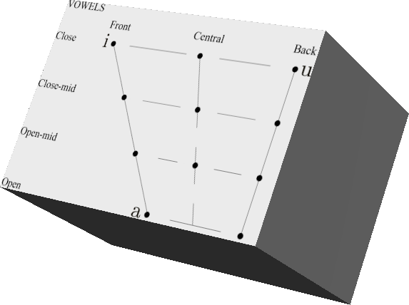

All the rules and words I've made for my conlang! Keep in mind that
a) I really don't have many solid ideas yet, and that
b) rules and words are probably gonna get switched around pretty frequently.
As stated on the homepage, this is the land of ancient web formatting (I'm too lazy to put effort into my code), and that extends to image embeds or any intuitive way of indexing things. Ctrl-F is your friend!
Take me back!The script is based solely off of the archaic Etruscan script, used around 500 BC by the Etruscans in central and northern Italy. This was done partly to have some consistency and realism, and partly to just have something to work off of. I don't have any worldbuilding in mind surrounding this language, but if I did, the script could have evolved from the archaic Etruscan. An ancient Mediterranean civilization, perhaps?
Below are charts showing the consonants and vowels in Untitled Conlang, now with *KRAY-Z 3D GRAPHIX!!!!*
Don't want *KRAY-Z 3D GRAPHIX????*
Fuck you! You're getting *KRAY-Z 3D GRAPHIX!!!!*
Consonants: b, d, f, g, l, m, n, ŋ, r, z, ʒ, ʔ
Vowels: a, i, u
/a/
/i/
/u/
/ai/
/ia/
/au/
/ua/
/ui/
/iu/

™ & © 2023 Yetch